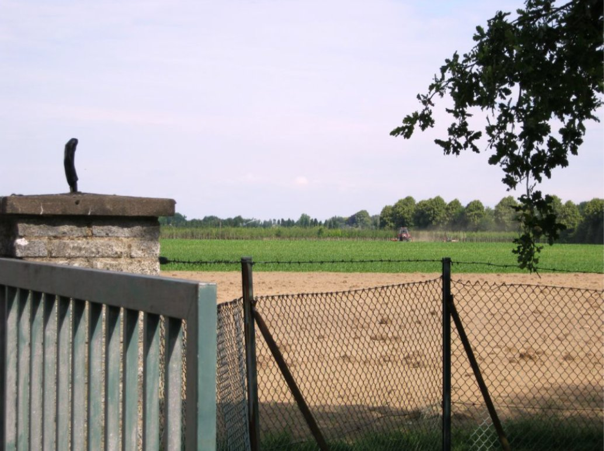

The Wasserwerk is embedded in active agricultural land.
The production wells of Wasserwerk Breyell (now operated as Wasserwerk Lobberich) and Wasserwerk Kaldenkirchen are sited within farmed terrain at the western margin of the Niederrhein. The proximity between agricultural inputs and groundwater extraction is the precondition for the contamination pathway analysed in Scenes 2 to 6.

Wasserwerk property boundary, Niederrhein
The production wells stand at the perimeter of farmed land. Surface inputs reach them through the unsaturated zone.
1 · establishing landscape
Figure (Scene 1). Photograph of the property boundary of the production-well field of Wasserwerk Breyell (Lobberich), Niederrhein, Germany. The image was taken by Osman Can Kandemiroglu and documents the immediate land-use context of the deep-groundwater extraction wells investigated in the source-attribution study of nickel mobilisation (Kandemiroglu, 2011; Wisotzky, Kandemiroglu & Plassmann, 2012). The agricultural field behind the fence carries the surface inputs (NO3−, SO42−, Cl−, NH4+) implicated in the acidification of the upper aquifer.